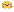
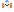
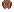

金毛温和 · 可靠
西施慵懒 · 陪伴
泰迪俏皮 · 黏人| 项 | 规格 | 备注 |
|---|---|---|
| 容器 | 固定 100×84(狗 84×72 + 岗台) | 恒定占位,杜绝布局抖动 |
| 岗台 | 1px h1,左 28px ph-dim 点睛 | 宠物世界与 UI 的唯一接缝 |
| 默认位 | 右下,状态栏上 8px / 右 30px | 多 pane 全局一只;全屏隐藏 |
| 气泡 | L4 · 1px h2 · r4 · mono 11 | 只允许短句:「汪!」「Woof!」 |
| 欢迎页形态 | 2× 尺寸(168×144) | 见 SHEET 07 欢迎页 |
| 可访问性 | 可关 · reduced motion 全静帧 | 读屏只报「宠物:品种,显示/隐藏」 |
| 姿态 | 触发 | 像素参数 | 时长 |
|---|---|---|---|
| 眯眼 | hover / 眨眼 / 打盹 | 毛色衬底整格 + 眼色缝(A:6×2px 下缘 / B:三段拱),每眼 ≤4 quad | hover 持续 · 眨眼 160ms |
| 委屈眼 | Exit ≠0 | 毛色衬底 + 眼色 2px 横条居中(「- -」) | 3s |
| SLEEP | 空闲 > 90s | 趴姿网格(每品种一张,14 列 ≤9 行):腿收起、肚皮贴岗台、身长 +2 格、头压低、闭眼;吸气帧背部 −1px;zZ 灰 #69748E 两格随呼吸 | 到唤醒,直切起身 |
| PEEK | 现身/换品种/欢迎切换 | 岗台线下裁切:身 +54px(全高)→ 0 升起,耳尖→眼→全身逐段出线;线下不画 | ~500ms 缓出 |
| PLAY | 双击 | 身 −5/−1 交替 · 尾 ±3 · 双爱心 #F08C98 交替闪 · 气泡「汪汪!」 | 1.4s |
| 项 | 规格 | 时长 | 备注 |
|---|---|---|---|
| 领养卡 | 浮层 620 · 七犬直选(L4+磷光脊)+ 🎲 缘分 + 名字井(L0 凹井 · 磷光块光标 · ≤8 字) | 一次性 | 老用户预选迁移;Esc 跳过零纠缠 |
| 哈欠 | 眯眼 A + 口型 2×0.7 格(K 色)→ 半闭 2×0.3 格 | 600+250ms | 仅深夜问候/深夜投喂;不重复 |
| 饼干 | 4×4 #C99052 + 2 点缺口;抛物线入场 | 飞 300 · 嚼 220×4 · 摆尾 3s | 每日 1 块,无数值 |
| 三帧律 | 蹲 +1.5px/耳塌 → 空中 −4px/耳滞后 → 落 +1px/尾扬 | 80/200/100ms | Success/Play/探头落地/接饼干共用 |
| 入场池 | 式一探头(线下升起)· 式二小跑(右缘入,gait)· 式三天降(顶落+回弹)· 式四它先到(趴睡→哈欠→起身) | 500/600/400/1200ms | 性格加权随机,连续两次不重样;日常显隐只用轻量二式 |